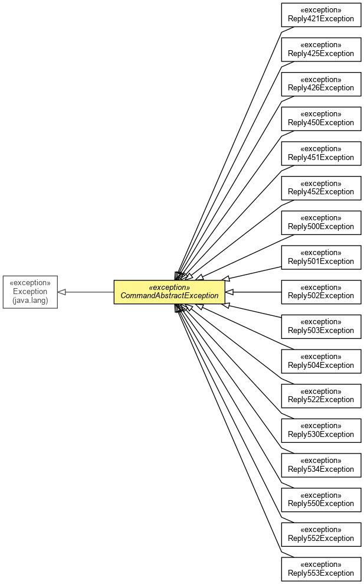

org.waarp.common.command.exception
Class CommandAbstractException
java.lang.Object
 java.lang.Throwable
java.lang.Exception
org.waarp.common.command.exception.CommandAbstractException
java.lang.Throwable
java.lang.Exception
org.waarp.common.command.exception.CommandAbstractException
- All Implemented Interfaces:
- Serializable
- Direct Known Subclasses:
- Reply421Exception, Reply425Exception, Reply426Exception, Reply450Exception, Reply451Exception, Reply452Exception, Reply500Exception, Reply501Exception, Reply502Exception, Reply503Exception, Reply504Exception, Reply522Exception, Reply530Exception, Reply534Exception, Reply550Exception, Reply552Exception, Reply553Exception
public abstract class CommandAbstractException
- extends Exception

Abstract class for exception in commands
- Author:
- Frederic Bregier
- See Also:
- Serialized Form
code
public ReplyCode code
- Associated code
message
public String message
- Associated Message if any
CommandAbstractException
public CommandAbstractException(ReplyCode code,
String message)
- Unique constructor
- Parameters:
code - message -
toString
public String toString()
- Overrides:
toString in class Throwable
getMessage
public String getMessage()
- Overrides:
getMessage in class Throwable
Copyright © 2009-2013 Waarp. All Rights Reserved.